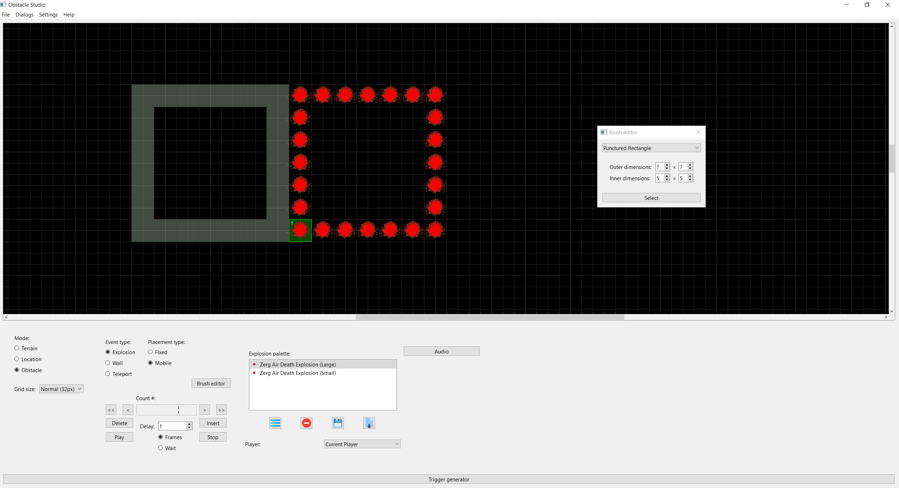

Hello! I'm a mathematics Ph.D. living in Brooklyn, NY. Since I was a kid, I've loved building things like Legos, theme parks in Rollercoaster Tycoon, or houses in the Sims. My love for design led me to think about a career in software engineering. While in graduate school, I taught myself Python by building a GUI to help Starcraft players design custom maps. However, realizing I wanted to put my mathematical skills to use, I started considering other options. This led me straight to data science, where an amazing intersection between software engineering and mathematics can be found.
I love to share knowledge with others - one of my favorite aspects of graduate school was teaching. When someone asks me for help understanding something, I usually ask at least one "counter" question, both because understanding the other person's thought process is crucial to answering their question, and because learning how others think is the most interesting aspect of teaching.
In my spare time, I like to play a Korean rhythm game called Pump It Up, where you step on arrows in time to music. I'm also fascinated with parrots and hope to care for one someday. If you'd like to talk to me for any reason, please don't hesitate to reach out through email or LinkedIn.. You can also check out my work on GitHub.
I've been a fan of the rhythm game Pump It Up since playing it at a Korean language camp I attended when I was 8. The core gameplay involves stepping on arrows with your feet in time to music. Here's a video of a top player plaing a difficult song:
It's natural to think of single steps as "letters" and sequences of steps as "words", so I thought it could be fruitful to apply NLP techniques to extract insights about the game. NLPump is currently a work in progress. The projects goals are multifaceted and include the ability to search for specific step patterns and building predicitve models based on step patterns (such as difficulty prediction).
This was my final project for the BrainStation data science bootcamp. As a student, I always appreciated the community on the StackExchange forum. I decided to use my final project to explore a question I had long been curious about: what factors contribute to the likelihood of a question receiving a timely response?
The StackExchange provides weekly dumps of their data in .xml format. Using this data, I built logistic regression and random forest models to predict whether or not a given question will be answered within a week. The models use features engineered from the text in the question, as well as user data such as the question poster's prior history on the site. I found that the most import factor was the level of site activity at the time of posting a question.
One of my favorite games, Starcraft, has a sandbox mode where players can design custom games. While a graduate student, I decided to build a tool to help players design a special genre of custom games called bounds. In a bound, the player has to navigate through an obstacle course consisting of tiles which explode in a repeating pattern. Obstacle Studio provides a visual interface for boundmakers to design these exploding obstacle courses and generate the code to realize them in Starcraft.
The app is written in Python using the PyQt6 GUI framework. You can check out my Youtube channel where I showcase many of the bounds I've made using Obstacle Studio. Here's one example:
Would you like to get in touch me with? Shoot me an email with the form below or message me on LinkedIn..
{kind=link}